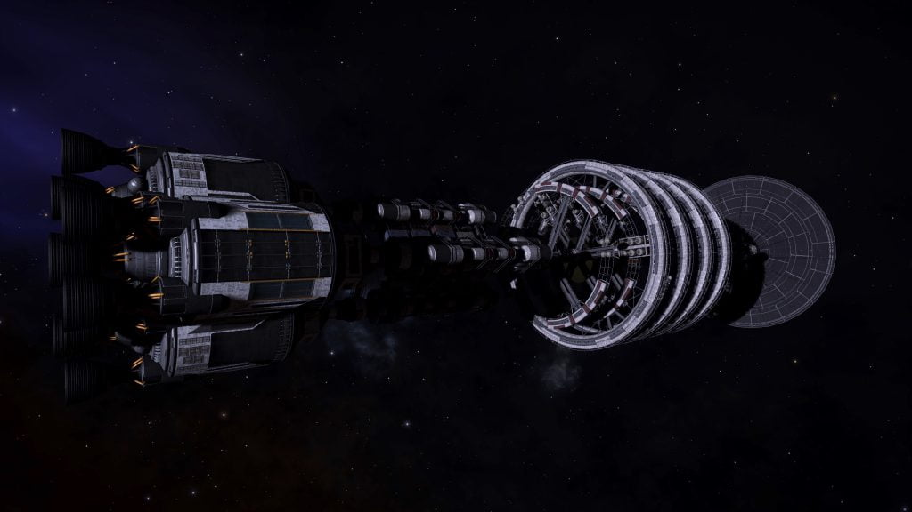
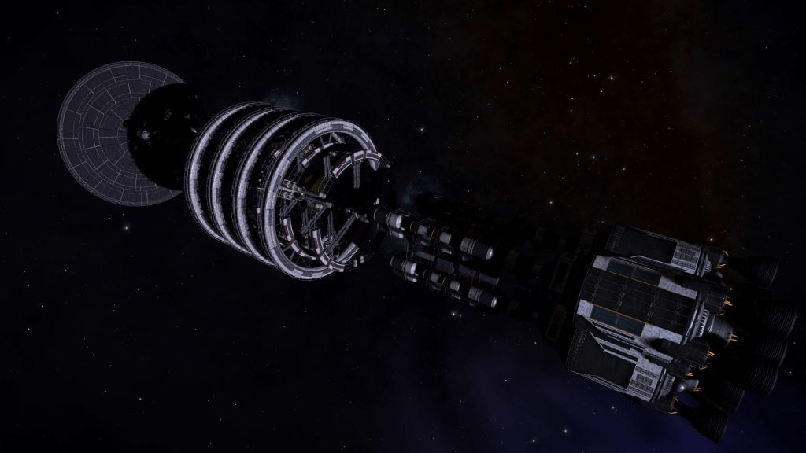

Atlas is an abandoned Generation Ship that can be found in the Charick Drift system, orbiting body A.
The ship was reported by X-Box Commander Dilliam53 (Source: Frontier Forums)
The location is revealed by the Listening Post in the EE Leonis system, orbiting body A:
ANOMALOUS SIGNAL DATA
…Transponder Signal ATL-360-A Detected…
Matching Signal Detected. Charick Drift. Time Stamp Predates Parameters.
…ships council…approved the plan…all systems go…pods…all the course…bring the ship in as close…Charick Drift…after…launch…all land safely…expedition…succeed…life…good…
…Signal Lost…

A series of five Ship Log Uplink points can be located along the hull. Deploy your ship’s hardpoints and use the onboard Data Link Scanner within 200m of each post to scan them and retrieve the logs. In addition to the text, each log is accompanied by an audio recording:
NO BRAKES 1/5
Chief Engineer’s Log:
The Captain told the crew the bad news. They’ve known for months now, but until today it’s been on a need-to-know basis. Now it’s out there.
We can’t stop the ship.
I remember telling the captain about the fault; a manufacturing issue that no one else had detected. I felt responsible; after all I’m the ship’s engineer, like my father and his father before him.
All he said was; “We’ll fix it”. Nine months on, we’re nearing our destination and no closer to finding a solution. But, in lieu of a fix, I believe I have an alternative.
NO BRAKES 2/5
Chief Engineer’s Log:
After all the debates, all the meetings and the arguing, the ship’s council has finally approved the plan. So we’re all systems go. We’re rigging the emergency pods and the life ships to carry as much useful equipment as possible.
The command crew have made all the course adjustments they can to get the ship close to the target. After that we’ll launch all the pods as the ship passes by. With any luck they will all land safely and we can finally call this mission a success.
There’s just one catch. Someone has to stay behind to launch the pods. That person will be stuck on board. One life for many, seems like a good deal. Jean will think I’m crazy, but I volunteered to be that person. Funny, Jean’s always telling me I need to step up to the challenge more, to prove I have what it takes. I’m not sure this is what she had in mind.
NO BRAKES 3/5
Chief Engineer’s Log:
After weeks of preparation and drills we’re finally getting close. Only a few more days until launch. All adjustments have been made and our trajectory is looking good. I’ve been getting the engineers to double and triple check everything. I want this to go as smoothly as possible. We’ve had our teething problems, which I guess were to be expected. After all the ship wasn’t meant to do this without stopping. I’m getting nervous, if this fails…
There’s another thing. Jean’s pregnant. She doesn’t know that I know. I found the test in the bathroom. With all that’s happening I guess she doesn’t know how to tell me. Maybe she’s afraid that it will affect my judgement.
She might have been right about that. I was going to tell her tonight that I’m the one. But I’m not sure I can anymore. She’ll want to stop me, or worse she’ll want to stay behind as well. I can’t let that happen.
NO BRAKES 4/5
Communication Log:
Pod 12, Launch, launch, launch. Pod 13, Begin launch procedures.
Pod 14, what are you doing? Pod 14, please acknowledge. Come in, do you read me? Abort, I repeat. Abort! You are not cleared t…
Oh hell! Explosion in bay 14. Emergency. I repeat, this is an emergency. All remaining pods. Begin launch…
*radio chirp*
Tom, where are you? The pilot is… He’s says he’s going to leave without you. What’s happening?
Jean, we’ve got to go, now!
This is Chief Engineer Tom Edwards to the pilot of Life Ship 003. This is a direct order. Secure all passengers and launch now.
Tom, the ship’s leaving. Where are you?
Jean, sweetheart, you have to listen to me. I’m sorry, this is the only way. I couldn’t tell you before. Someone needs to stay on board and make sure everyone gets out of here.
I don’t… Why, why you?
It’s my responsibility. Listen to me. You’re going to be okay. Both of you.
How? How did you know?
That’s not important. Just know everything is going to be okay. I love…
NO BRAKES 5/5
Chief Engineer’s Log:
We’re out of communication range now; I’ve been sitting here for hours listening to the crackle of the dead signal. I thought I was ready for this. Thought, I had made peace with it, but knowing that that was the last time I was going to hear her voice makes it so much worse.
The captain said they are going to name the first settlement after me. A nice gesture I guess, but I really didn’t do it for them. I did it for her and the life she’s carrying.
This was the right thing to do. There is no telling when or if this ship will ever stop. We had our shot and we took it. I’d gladly do it again. My kid’s not going to grow up in some tin can, floating aimlessly in space. They’re going to grow up with dirt between their toes and the sky above their head.
